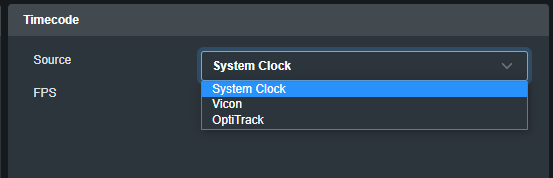
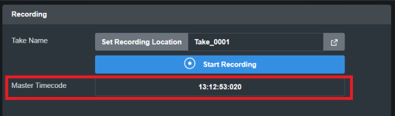
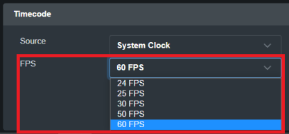
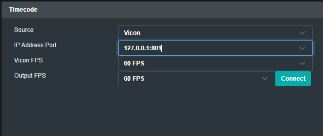
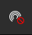
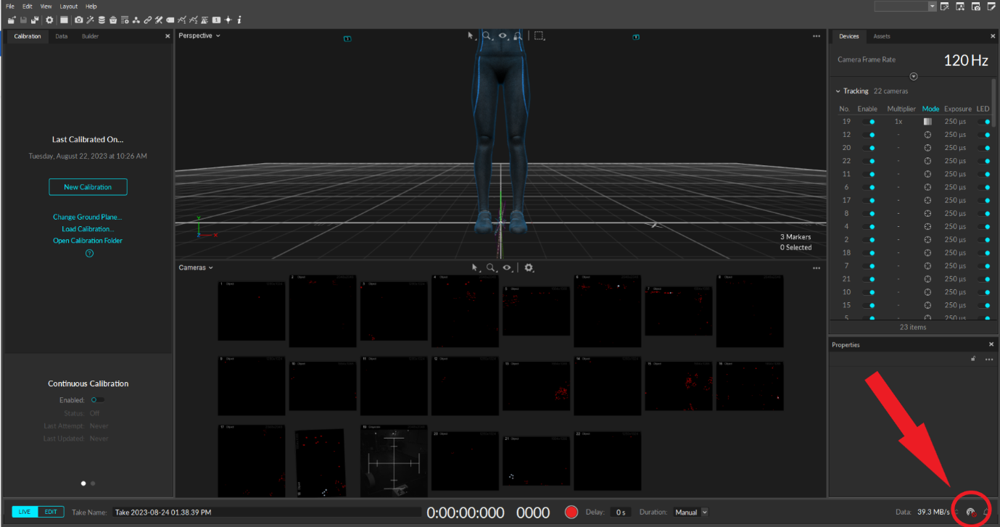
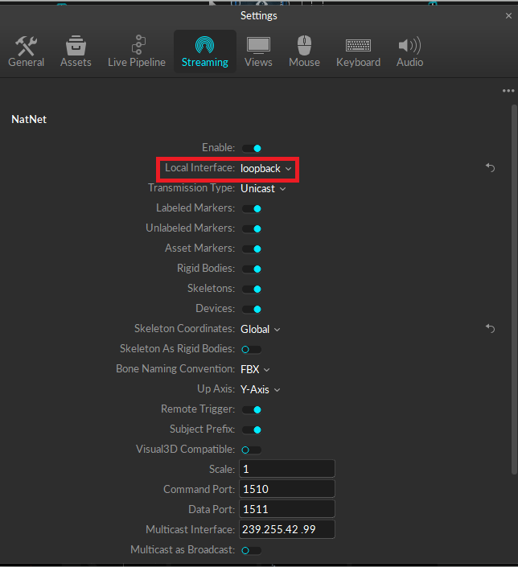
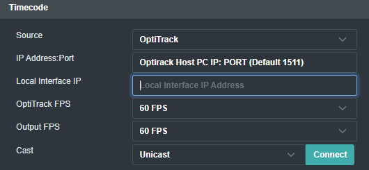
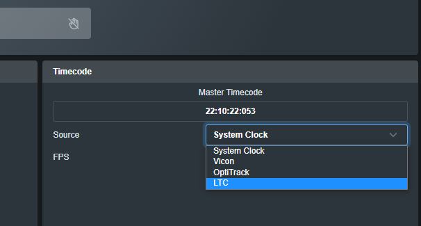
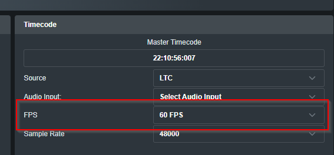

1. Setting Up Timecode
Your timecode source can be set from the Timecode section at the bottom right-hand side of Hand Engine 3 Pro
You have three options for timecode source:
- System Clock
- Vicon
- Optitrack
- LTC

You can check the source timecode within the recording section at the bottom center of Hand Engine.

You can also set the frame rate of your local recordings.

CAUTION! Prior to recording any take, please ensure the timecode shown here matches your source timecode.
System Clock
- Select System Clock from the dropdown menu
- Hand Engine will now use the local PC system time as its timecode source
Vicon Timecode
- Make sure you have Shogun running with an active TCP DataStream
- Select Vicon from the Timecode Source drop-down menu
- Enter the IP Address and Port number of the data stream from Vicon
- The default port for Shogun and Blade is 801. If you have changed this in Vicon, please ensure the matching port number is entered in Hand Engine
- If Vicon is running on another PC on your network, please enter the IP address of the PC running Vicon into the IP Address:Port field.

- Click on Connect
- Check the timecode source under the Start Recording button in Hand Engine 2.0 and ensure that it is synced to the timecode coming from Vicon.
Vicon Default Port: 801
OptiTrack Timecode
- In Motive 2.3.X, the Data Streaming pane can be accessed under the View tab or by clicking the icon on the main toolbar.
- In Motive 3.0.X this is located in the Edit -> Settings option.


- Within the streaming pane, make sure you have selected "Broadcast Frame Data" and please take note of the transmission type as this will need to be selected correctly within Hand Engine
- If streaming to Hand Engine on another PC (Network), please set the local interface to the IP address of the PC running Motive. (Run ipconfig in a command prompt window to find this)
- If streaming to Hand Engine on the same PC (Localhost), set local interface to "Loopback"

- Within the Hand Engine 2.0 Timecode section, please select OptiTrack from the source dropdown menu
- Within the IP Address:Port field,
- If Motive is on a separate PC from Hand Engine: please enter the IP address of the PC running Motive and the port number. The default for Motive is 1511.
- If Motive is on the same PC as Hand Engine: Please enter "127.0.0.1" and the port number (Default 1511)

- Within the Local Interface IP, please enter as follows
- If connecting to motive on another PC (Over network), enter the IP address of the PC running Hand Engine. (You can find this by running ipconfig within a command prompt window)
- If connecting to motive on the same PC (Localhost), Please enter localhost IP: 127.0.0.1
- Please make sure you have selected the correct option for the Cast field (Unicast or Multicast) as set within the motive streaming NatNet settings.
- Click on Connect
- Check the timecode source under the Start Recording button in Hand Engine 2.0 and ensure that it is synced to the timecode coming from Motive.
Motive Default Port: 1511
LTC Timecode
- Select the LTC option in the timecode dropdown and ensure the FPS and the Sample Rate are set correctly to that of your LTC device:
- Note, this step is important as the timecode will not function if these are incorrect


- Select your LTC timecode source in the Audio Input dropdown
- If your LTC timecode source is not in this dropdown, ensure it is properly connected to your computer
- Note, the LTC source will not function when plugged into a combination of headphone and microphone jack
Note: The order of setting the Audio Input, FPS, and Sample Rate is not important, they can be set in any order.